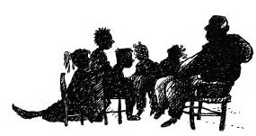

29 Ağustos 1928
Sanem, Simin, Nisan, Erim, Zafer ve Cimbo, hepsi Muhittin Dede’nin etrafına sandalyeleri çekmiş oturuyorlardı. Sanem ve Simin, Orhan Amcalarının dizlerindeydiler, o da her ikisine sarılmış dinliyordu. Ekipte tek bir eksik vardı. Kimse onun adını Sivriada’da yaşanan o geceden sonra anmıyordu ama cidden çok üzülmüşlerdi; Müzeyyen Babaanne hâlâ inanamıyordu.
— Yapmaz benim Tevfik oğlum, kandırmışlardır onu.
Muhittin Dede,

— İşte böyle çocuklar, Osman Hamdi Efendi, 1883’te Nemrut Dağı’ndaki heykelleri buldu. Almanlardan önce orayı kazdı ve Yervant Oskan Efendi’yle Antakya’da Saman Dağı, Urfa, Antep, Zincirli ören yerlerini kazdılar. 1887’de Lübnan’ın Sayda şehrinde de müthiş arkeolojik eserler –İskender’in lahdini– buldu; orası da Osmanlı toprağıydı o vakitler. 1891’de Muğla’da Fransız arkeologlarla Hekate Tapınağı’nı buldu. Bu kazıları yaparken yabancıların ülkemizde nasıl cirit attıklarını, buldukları her şeyi nasıl yurt dışına götürdüklerini görüyor, çok üzülüyordu. Knidos Yarımadası’ndaki antik kenti, padişah izni alarak gemilerle yağmalamışlardı. Bergama’daki Artemis Tapınağı’nı ve Bodrum’daki Mozole’yi izinle götürmüşlerdi ama izinsiz çaldıklarının da haddi hesabı yoktu. Bu değerleri nasıl koruyabileceğini düşünürken 1906 yılında büyük bir fırsatla karşılaştı...
Simin hemen sordu:
— O fırsat neydi beybaba?
— Babanızla karşılaştı. Genç, ülkesini seven, arkeoloji ve ilimle ilgili, cesur, gözü pek bir zabitle, Tahsin Erdoğan’la karşılaştı. Beraberce planlar yaptılar, bu millî serveti nasıl saklarız diye. Osman Hamdi, arkeoloji ve resim sanatını biliyordu, Erdoğan da teknik kafaya sahip ve emrinde askerî birliği olan bir zabitti. Planlarını ben de dâhil kimseye anlatmadılar. Hangimizin casus olabileceğini bilemezsiniz.
— “Dürüst zannettiğimiz insanların çoğu, önüne fırsat çıkmamış olanlardır” der annem, dedi Nisan.
Zafer,
— Vaay! Dedesinin torunu akıllı bıdık...
“Akıllı bıdık” diye tekrarladı Sanem. Orhan Amca’sı başını okşadı, Sanem de dönüp sevgiyle yanağından öptü. “Dudağın siyah oldu” dedi Zafer, Sanem hemen dudağını sildi. Bu duruma en çok Orhan Yüzbaşı güldü –bizim Arap yani.
Muhittin Dede devam etti:
— Buldukları bütün değerli arkeolojik eserleri İskenderun Limanı’na taşıdılar. Bu taşıma işini Erdoğan’ın askerî birliği yaptı. Daha sonra gemiyle Sivriada’ya, Osman Hamdi Efendi’nin keşfettiği fakat kimseye duyurmadığı manastırın altındaki bu gizli sığınağa getirdiler. Burası, Bizans imparatorlarının savaş anında ya da Konstantinopol’ün ele geçirilmesi durumunda saklanmaları için yapılmış çok gizli bir savaş merkeziydi. Şifreyi ikisi çok önceden çözdükleri için bu değerli hazineyi yıllar sonra ortaya çıkacak şekilde sakladılar. İstiklal Harbi’nde Erdoğan’ın birliğinin tamamı şehit oldu. Erdoğan’ın üzerine kapandığı Mehmet, o taşıma işini yapan askerî birlikte kalan son askerdi. Hepsi namusları üzerine yemin etmişlerdi, bu gizli görevden kimsenin haberi olmayacaktı.
— O yüzden “Bilen kalmadı, bilen kalmadı” diyordu son anlarında, dedi Şinasi Albay.
Zafer,
— Vaayy bee!
Sanem merakla sordu:
— Ahmet Amca’yı nasıl kandırdılar peki?
— Amca demeyin ona, diyerek kızgınlık içinde baktı Erim.
Muhittin Dede ve Orhan Yüzbaşı bakıştılar.
— Komutanım, müsaade ederseniz ben anlatayım?
— Tabii Orhan’ım.
— Dostlarım, Ahmet Tevfik Efendi teşkilatımızın en değerli ajanıdır. Beş dil bilir ve görüp göreceğiniz en gözü pek, en vatansever subaydır ki kendisi şu anda miralay rütbesindedir.
Erim şaşkınlık içinde ayağa kalkarak,
— Nasıl yani?
— İngiliz, Fransız ve Amerikan istihbarat teşkilatlarının ortak operasyonunu duyunca izlemeye aldık. Ahmet Tevfik Komutan’ımız, onlarla işbirliğine gidip onların tarafında göründü. Aslında devamlı yanlış bilgiler verip bu adamları izlememizi sağladı. Ben de gittiğiniz her yerde peşinizdeydim. Eğer o olmasa denizaltılardan, dönen operasyonunun büyüklüğünden hiç haberimiz olmazdı. Ahmet Tevfik Komutan’ımın onlara verdiği bilgiler çok sıradandı; “Bursa’ya gidiyoruz, Kuleli’ye gittiler” gibi. Sadece bir ara Bursa’da bir imamı gereksiz yere –çok şey biliyor diye– bu adamlara yakalatıp hırpalattığını duyduk ki bu üç teşkilat adamcağızı üç gün sorgulamış, bir tek o konuyu çözemedik.
Gençler kahkahaya boğuldu.
— Biz biliyoruz, o da Tevfik Amca’yı hırpalamıştı.
— Neyse, üç istihbarat teşkilatının birden Bursa’daki bir imama üç gün vakit ayırması bizi zaman açısından çok rahatlattı sonuçta.
Erim,
— Peki, İstiklal Harbi’ne niye katılmadı?
Muhittin Dede,
— Aslında katıldı, İstanbul’daki istihbarat faaliyetini o yürüttü. İngiliz ajanlarının arasına sızdı. Onlardan biriymiş gibi göründü ve İngilizlerin tüm hareketlerini bizlere rapor etti. O kadar çok can kurtardı ki ama etrafı onu korkak zannetti. Yani o da aslında hayatını kaybetti, etrafında neredeyse hiç dostu kalmadı. Yakınları bile dışladı. Bir siz dışlamadınız, bir de...
Müzeyyen Anne’ye dönerek devam etti:
— Bu iyi kalpli, bu güzel yüzlü hanımefendi dışlamadı. Dikkat edin, Tevfik aslında ne kadar yalnız. Siz olmasanız yaşayamazdı. Aslında İstiklal Harbi’nde o da öldü. Herkes onu bazen havai biri zanneder. Aslandır benim Tevfik oğlum!
Çocuklar ayağa kalkıp birbirlerine sarıldılar.
Erim döndü,
— Beybaba, hazineyi bulduğumuzda bu kadar sevinmemiştim, dost her hazineden değerli emin olun.
— Bilmez miyim oğlum.
— Peki, Arap Amca...
Herkes güldü.
— Pardon, Orhan Amca, niye o akşam diğerleriyle birlikte Tevfik Amca’yı da sorguya götürdünüz? Orada serbest bıraksaydınız da sarılıp ağlasaydık ya, dedi Zafer.
— Zafer’im, o Nicholas, David, Haşmet, hepsi serbest kalacak. Şimdi büyükelçileri, devlet başkanları çoktan devreye girmiştir, bürokratlara rüşvet veriliyor, besledikleri gazeteciler köşelerinde yazılar yazıyorlardır, “Dünya devletleriyle aramız bozulacak” diye bu adamların hepsi üç günde serbest kalır. Miralay Tevfik’in bizden olduğunu anlarlarsa zarar verirler. Onların tarafından olduğunu zannederlerse yaşar ve hizmetine devam eder.
— Vayy be!
Muhittin Dede devam etti:
— Bakın çocuklar, bu bilgileri size anlatmamız çok büyük hata. Fakat o akşam sorgu merkezine gittiğimde Ahmet Tevfik çocuklar gibi ağlıyordu. Ben onu ikinci defa ağlarken gördüm; ilk kez, Erdoğan Sakarya Meydan Muharebesi’nin son günü şehit olduğunda; bir de o akşam sorgusundan sonra odasında yattığında. Sordum, “Ne oldu Tevfik?” diye. “Komutanım, çocukların o günkü bakışlarını unutamıyorum, üzüntümden kahroluyorum. Ben böyle bir acı yaşamadım” deyince fark ettim ki koca adam sizin dostluğunuz olmadan yaşayamayacak; anlatmaya karar verdik Orhan Yüzbaşı’yla birlikte.
Şinasi Albay,
— Yani Arap Amca’nız.
Gülüştüler. “Bu hazırlıklar niye?” diye sordu Simiş. “Birazdan görürsünüz” dedi Muhittin Dede. Yusuf Amca, Sevim Teyze, Bengül Teyze, hepsi dışarıdaydılar. Bir anda askerî kıtanın “rahat –esas duruş– dikkat” sesi ve ardından askerî bandonun müziğini duydular: “İzmir’in dağlarında çiçekler açar. İzmir’in dağlarında çiçekler açar.”
Muhittin Dede gülümseyerek Şinasi Albay ve Orhan Yüzbaşı heyecanla ayağı kalktılar ve hazır ol duruşuna geçtiler. İkizler sabahtan beri bahçe girişindeki süslemelerin niye yapıldığını anlamaya çalışıyorlardı. İçeri giren heyeti görünce Zafer, “Yok artık azizim!” dedi. Nisan ve Erim’in gözleri fal taşı gibi açılmıştı. Gazi Mustafa Kemal, arkasında heyetiyle birlikte bahçe kapısından içeri girmiş, gülümseyerek kahramanlarımıza bakıyordu.
Kara Oklar Çetesi üyeleri birbirlerine baktılar. “Haydi!” dedi Erim, “Sona kalan çürük yumurta!” Çocuklar, Mustafa Kemal’e doğru koşmaya başladılar. Her zaman Zafer’i –özellikle– geçmeyen ikizler bile bu sefer onu unutmuştu. Zafer de hepsine yetişmeye çalıştı. Mustafa Kemal kendine doğru koşan beş çocuk, bir de köpeği görünce kollarını kocaman açtı yere düşmemek için, sağlam durmaya çalıştı. Çok ilginç bir şey oldu. Erim sağından, Nisan ve Sanem solundan, Simin ve Cimbo bacaklarının arasından geçti Gazi’nin. Mustafa Kemal’le Muhittin Dede hayretle göz göze geldiler. En son Zafer geçti sol tarafından. “Özür dilerim Paşam” dedi Cumhurbaşkanı’na. O da geçti sarılmadan. Mustafa Kemal’in kolları açık öyle kalakaldı. Arkasını döndüğünde çocukları, heyetin gerisindeki Ahmet Tevfik’in her tarafından sarılmış, sevgi yumağı olmuş, şapur şupur öperlerken gördü. Ahmet Tevfik bir yandan onlara sarılıyor, bir yandan ağlıyordu.
Muhittin Dede,
— Kusura bakmayın Paşam, çocuk işte...
Mustafa Kemal döndü,
— Muhittin’im çocuklar ne protokol bilir ne cumhur reisi ne makam ne mevki. Onlar sadece sevgi bilir, içtenlik bilir, insanlık bilir. Bak kollarını açmış devlet başkanını vız geçtiler, canlarına koştular. Keşke hepimiz çocuk kalsaydık.
— Haklısınız Paşam...
— Yalnız Muhittin, bak kollarım boş kaldı.
— Ben sarılabilir miyim Paşam?
— Uzatma, sarıl.
Muhittin Dede, Mustafa Kemal’e sarıldı.
— Aslan komutanım!
— Aslan Muhittin’im, çok büyük iş başardınız.
— Sağ olun komutanım... Çocuklarımız başardı; biz, uzaktan izledik.
Kalabalık, bu gördükleri karşısında kayıtsız kalamadı ve alkışlamaya başladı. Çocuklar, Tevfik Amcalarıyla birlikte Gazi Mustafa Kemal’in yanında toplandılar; Gazi hepsini öptü, yanaklarını okşadı.
— Yaptığınız hizmet kelimelerle tarif edilemez. Yaşınızdan olgun, cesur ve kahramanca davrandınız. Ailelerinizin sizinle gurur duyduğu gibi çocuklarınız da sizinle gurur duyacak. Tüm matbuat,[30] tüm dünya gazeteleri bu büyük arkeolojik buluştan bahsediyor. Büyük bir turist akını ve gelir bekliyor ülkemizi. Yalnız, eğer insanımıza tarih bilincini, kitap, arkeoloji, ilim sevgisini kazandıramazsak o hazine hiçbir değer ifade etmez. Daha çok okuyan, araştıran bir millet olursak ayakta kalırız. Hepinizi çok öpüyorum.
“Peki” dedi Sanem ve Simin, “...öpüyorum” duyunca yanaklarını uzattılar. Gülüşmeler arasında Gazi eğildi, ikisini de öptü.
— Tevfik Efendi, beni görmeyi çok istediğinizi, Taksim Anıtı açılışına gelemediğim için, sonra da Harf İnkılabı konuşmama siz gelemediğiniz için bunun mümkün olmadığını söyleyince ben de ziyaretinize geldim.
Çocuklar sevgiyle Mustafa Kemal Paşalarına sarıldılar. O da onları kucakladı.
— Müsaadenizle, devlet işi beklemez, artık gitmeliyim.
“Görüşürüz amca” diye bağırdı ikizler ve Cimbo da havladı.
— Maceranızı detaylı dinledim. Erim hanginiz?
— Benim Paşam, dedi Erim.
— Zafer de sensin o zaman ve Nisan da sen. Aferin tekrar. Yalnız Tevfik, o Bursa’daki dağın adını beğenmedim; Keşiş Dağı. Onun adını değiştirelim, dedi Mustafa Kemal.
Zafer atıldı.
— Paşam ben gördüm Keşiş Dağı’nı; çok büyücek, kocaman, ulu. Ben olsam adını ya Kocamandağ ya da Uludağ yapardım.
Mustafa Kemal heyete döndü,
— Hatırlatın bana; Zaferciğimi mi kıracağız? Uludağ olsun.
Bir kez daha alkış koptu. Zafer kocaman gülümsedi. Kapıdan çıkmadan önce Mustafa Kemal, “Erim, gel bakayım yanıma” dedi. Eğildi kulağına bir şeyler fısıldadı. İki tane de zarf verdi. Sonra Erim’i yanaklarından öptü. Heyet giderken Erim, yanakları kıpkırmızı geldi.
Müzeyyen Babaanne,
— Ne söyledi sana Mustafa Kemal?
— Bandırma Vapuru’nda babamla beraberlermiş, Gazi’ye bir mektup bırakmış babam. Onu verdi. Bir de köşk için biraz para. Para olan zarfı babaannesine uzattı Erim. Zarfı açmadılar, hiçbiri içinde ne kadar para var diye merak etmedi. Diğer zarfı açarken hepsinin kalbi aynı anda aynı hızda atıyordu.
Mektupta üç kelime vardı:
L. D. V.
Utu-İnanna
— Yeni macera başlıyor galiba, dedi Erim.
— Yok artık azizim, dedi Zafer.
— Yarın sabah yola koyulalım, dedi Erim ve Zafer’e çaktırmadan diğerlerine göz kırptı.
“Pırt” diye hafif bir ses duydular. Bahçe kahkahayla doldu. Sanki köşk, bahçedeki taş fırın, Sivriada’daki freskler, manastırdaki ikonlar, üstlerindeki erguvan ağacı, karınca Haydar, tahta kurdu Abdulmuttalip, hamam böceği İsmet, hepsi gülüyorlardı. Hatta gökyüzündeki melek Erdoğan Baba, Gülten Anne, Sanem Anne, hepsi gururla gülüyorlardı, iyi ki varsınız diye. Geriye hayırlı evlat bırakanların iyilik defterlerinin hep devam ettiğini bilerek gülüyorlardı.
— İşte böyle, dedi puhu kuşu.
Sivriada’da gördüklerini tek tek anlattı.
— Keşke sen de geceleri uçabilseydin de sen de görseydin bu gençlerin gösterdiği cesareti. Onları böyle birbirine bağlayan şey birbirlerine olan sevgileri, cesaret ve yaşadıkları ülkeyi içtenlikle sahiplenmeleri.
Gözlerini meltem meltem, iri iri açtı küçük arkadaşı saka.
Bu sırada Kara Oklar Çetesi üyeleri, Tevfik Amcalarının heyecanla anlattıklarını mutlulukla dinliyordu. Bahçedeki ulu erguvanın üzerindeki kırmızı gagalı akıllı saka kuşu aşağıdaki sahneyi görünce çok sevindi.